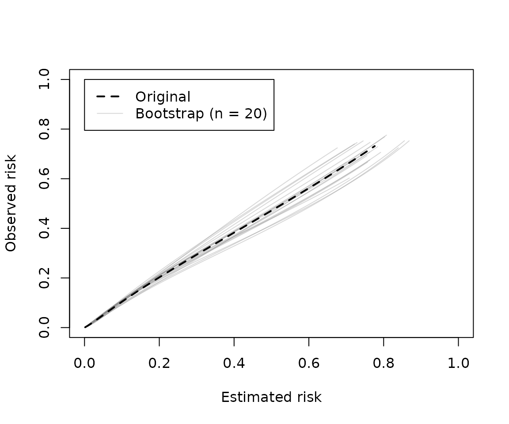
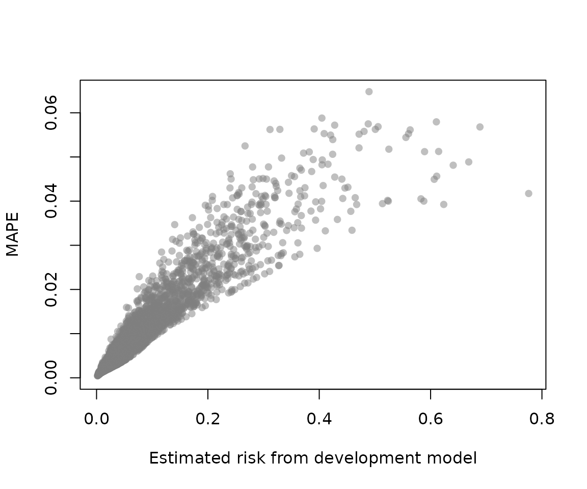
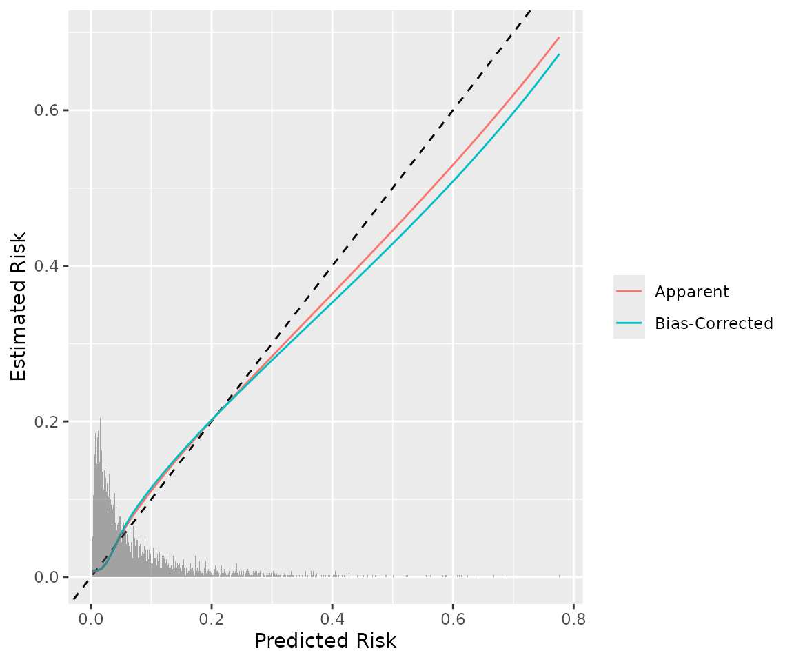
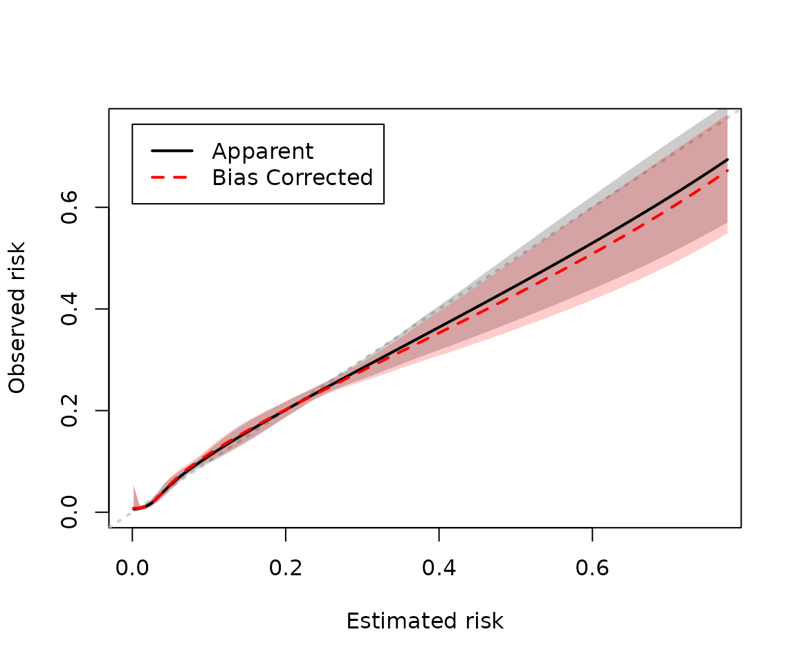
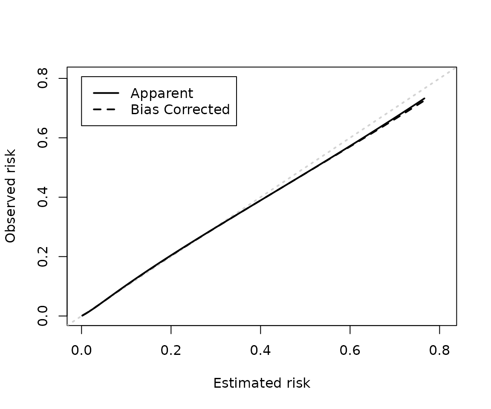

Getting started with `pminternal`
Stephen Rhodes
2025-03-18
Source:vignettes/pminternal.Rmd
pminternal.RmdIntroduction
In developing a clinical prediction model measures of model performance are biased by the fact that we’re using the same data to fit (‘train’) the model as evaluate it. Splitting data into development and validation sets is inefficient. Bootstrapping or cross-validation can be used to estimate bias-corrected measures of model performance. This is known as ‘internal validation’ and addresses the question: what is the expected performance of a model developed in the same way in a sample selected from the same population? This is not to be confused with ‘external validation’ which assesses model performance in a different population or setting.
pminternal is inspired by the functions
validate and predab.resample from the
rms package. The aim is to provide a package that will work
with any user-defined model development procedure (assuming it can be
implemented in an R function). The package also implements more recently
proposed ‘stability plots’. Currently only binary outcomes are supported
but a goal is to eventually extend to other outcomes (survival,
ordinal).
Supplying a model via fit
validate only needs a single argument to run,
fit. fit should be a fitted model that is
compatible with insight::get_data,
insight::find_response, insight::get_call, and
marginaleffects::get_predict. Models supported by insight
can be found by running insight::supported_models() (or run
is_model_supported(fit)); models supported by
marginaleffects are here https://marginaleffects.com/bonus/supported_models.html.
As we’re dealing with binary outcomes, not all models listed will be
applicable.
The code below loads the GUSTO-I trial data, selects relevant
variables, subsets to reduce run time, fits a model (a
glm), and passes it to validate to produce
optimism corrected performance metrics via bootstrap resampling.
library(pminternal)
library(Hmisc)
#>
#> Attaching package: 'Hmisc'
#> The following objects are masked from 'package:base':
#>
#> format.pval, units
getHdata("gusto")
gusto <- gusto[, c("sex", "age", "hyp", "htn", "hrt", "pmi", "ste", "day30")]
gusto$y <- gusto$day30; gusto$day30 <- NULL
mean(gusto$y) # outcome rate
#> [1] 0.06982611
set.seed(234)
gusto <- gusto[sample(1:nrow(gusto), size = 4000),]
mod <- glm(y ~ ., data = gusto, family = "binomial")
mod_iv <- validate(mod, B = 20)
#> It is recommended that B >= 200 for bootstrap validation
mod_iv
#> apparent optimism corrected n
#> C 0.7983 0.00385 0.79446 20
#> Brier 0.0603 -0.00063 0.06094 20
#> Intercept 0.0000 0.00687 -0.00687 20
#> Slope 1.0000 0.00837 0.99163 20
#> Eavg 0.0023 0.00123 0.00108 20
#> E50 0.0014 0.00107 0.00034 20
#> E90 0.0044 0.00280 0.00160 20
#> Emax 0.0447 0.04581 -0.00112 20
#> ECI 0.0017 0.00704 -0.00530 20As this validate call was run with
method = "boot_optimism" we are able to assess model
stability via the following calls. Note that these stability plots are
not based on the estimates of optimism but rather based on predictions
from models developed on bootstrapped resampled data sets evaluated on
the original/development data. In that sense it is conceptually more
related to the bias-corrected estimates obtained from
method = "boot_simple". In any case both methods results in
the necessary data to make these plots (see also
classification_stability and
dcurve_stability).
# prediction stability plot with 95% 'stability interval'
prediction_stability(mod_iv, bounds = .95)
# calibration stability
# (using default calibration curve arguments: see pminternal:::cal_defaults())
calibration_stability(mod_iv)
# mean absolute prediction error (mape) stability
# mape = average difference between boot model predictions
# for original data and original model
mape <- mape_stability(mod_iv)
mape$average_mape
#> [1] 0.009233709It is possible to get apparent and bias-corrected calibration curves.
For this we need to set an additional argument, specifying where to
assess the calibration curve (i.e., points on the x-axis) as follows. We
can also select how calibration curves will be estimated. In this case
we use a restricted cubic spline with 5 knots (see
pminternal::cal_defaults() for the default settings).
# find 100 equally spaced points
# between the lowest and highest risk prediction
p <- predict(mod, type="response")
p_range <- seq(min(p), max(p), length.out=100)
mod_iv2 <- validate(mod, B = 20,
calib_args = list(
eval=p_range,
smooth="rcs",
nk=5)
)
#> It is recommended that B >= 200 for bootstrap validation
mod_iv2
#> apparent optimism corrected n
#> C 0.7983 0.00204 0.7963 20
#> Brier 0.0603 -0.00096 0.0613 20
#> Intercept 0.0000 0.02506 -0.0251 20
#> Slope 1.0000 0.01743 0.9826 20
#> Eavg 0.0068 -0.00061 0.0074 20
#> E50 0.0063 0.00021 0.0060 20
#> E90 0.0106 -0.00030 0.0109 20
#> Emax 0.0820 -0.00523 0.0873 20
#> ECI 0.0092 -0.00136 0.0105 20
calp <- cal_plot(mod_iv2)The plotting functions are fairly basic but all invisibly return the
data needed to reproduce them as you like. For example, the plot below
uses ggplot2 and adds a histogram of the predicted risk
probabilities (stored in p) to show their distribution.
head(calp)
#> predicted apparent bias_corrected
#> 1 0.001661484 0.006418392 0.007972031
#> 2 0.009484478 0.007824631 0.008528307
#> 3 0.017307471 0.010911750 0.010198648
#> 4 0.025130465 0.017945390 0.017133285
#> 5 0.032953458 0.028541737 0.028377736
#> 6 0.040776452 0.040675895 0.041411019
library(ggplot2)
ggplot(calp, aes(x=predicted)) +
geom_abline(lty=2) +
geom_line(aes(y=apparent, color="Apparent")) +
geom_line(aes(y=bias_corrected, color="Bias-Corrected")) +
geom_histogram(data = data.frame(p = p), aes(x=p, y=after_stat(density)*.01),
binwidth = .001, inherit.aes = F, alpha=1/2) +
labs(x="Predicted Risk", y="Estimated Risk", color=NULL)
Finally, bootstrap confidence intervals can be calculated (see https://onlinelibrary.wiley.com/doi/10.1002/sim.9148 and
pminternal::confint.internal_validate for details).
(mod_iv2 <- confint(mod_iv2, method = "shifted", R=100))
#> apparent optimism corrected n corrected_lower corrected_upper
#> C 0.7983 0.00204 0.7963 20 0.7724 0.826
#> Brier 0.0603 -0.00096 0.0613 20 0.0548 0.066
#> Intercept 0.0000 0.02506 -0.0251 20 -0.0251 -0.025
#> Slope 1.0000 0.01743 0.9826 20 0.9826 0.983
#> Eavg 0.0068 -0.00061 0.0074 20 0.0039 0.013
#> E50 0.0063 0.00021 0.0060 20 0.0026 0.011
#> E90 0.0106 -0.00030 0.0109 20 0.0060 0.026
#> Emax 0.0820 -0.00523 0.0873 20 0.0161 0.198
#> ECI 0.0092 -0.00136 0.0105 20 0.0030 0.042And if confidence intervals are available they are plotted by
cal_plot by default.
cal_plot(mod_iv2, bc_col = "red")
Additional models that could be supplied via fit and
that I have tested on this gusto example are given below. Please let me
know if you run into trouble with a model class that you feel should
work with fit. The chunk below is not evaluated for build
time so does not print any output.
### generalized boosted model with gbm
library(gbm)
# syntax y ~ . does not work with gbm
mod <- gbm(y ~ sex + age + hyp + htn + hrt + pmi + ste,
data = gusto, distribution = "bernoulli", interaction.depth = 2)
(gbm_iv <- validate(mod, B = 20))
### generalized additive model with mgcv
library(mgcv)
mod <- gam(y ~ sex + s(age) + hyp + htn + hrt + pmi + ste,
data = gusto, family = "binomial")
(gam_iv <- validate(mod, B = 20))
### rms implementation of logistic regression
mod <- rms::lrm(y ~ ., data = gusto)
# not loading rms to avoid conflict with rms::validate...
(lrm_iv <- validate(mod, B = 20))User-defined model development functions
It is important that what is being internally validated is the
entire model development procedure, including any tuning of
hyperparameters, variable selection, and so on. Often a fit
object will not capture this (or will not be supported).
In the example below we work with a model that is not supported by
insight or marginaleffects: logistic
regression with lasso (L1) regularization. The functions we need to
specify are model_fun and pred_fun.
-
model_funshould take a single argument,data, and return and object that can be used to make predictions withpred_fun....should also be added as an argument to allow for optional arguments passed tovalidate(seevignette("pminternal-examples")for more examples of user-defined functions that take optional arguments).lasso_funformats data forglmnet, then selects the hyperparameter,lambda(controls the degree of regularization), via 10-fold cross-validation, and fits the final model with the ‘best’ value oflambdaand returns. -
pred_funshould take two arguments,modelanddata, as well as the optional argument(s)....pred_funshould work with the model object returned bymodel_fun.glmnetobjects have their ownpredictmethod so the functionlasso_predictsimply formats the data and returns the predictions.predict.glmnetreturns a matrix so we select the first column to return a vector of predicted risks.
#library(glmnet)
lasso_fun <- function(data, ...){
y <- data$y
x <- data[, c('sex', 'age', 'hyp', 'htn', 'hrt', 'pmi', 'ste')]
x$sex <- as.numeric(x$sex == "male")
x$pmi <- as.numeric(x$pmi == "yes")
x <- as.matrix(x)
cv <- glmnet::cv.glmnet(x=x, y=y, alpha=1, nfolds = 10, family="binomial")
lambda <- cv$lambda.min
glmnet::glmnet(x=x, y=y, alpha = 1, lambda = lambda, family="binomial")
}
lasso_predict <- function(model, data, ...){
x <- data[, c('sex', 'age', 'hyp', 'htn', 'hrt', 'pmi', 'ste')]
x$sex <- as.numeric(x$sex == "male")
x$pmi <- as.numeric(x$pmi == "yes")
x <- as.matrix(x)
plogis(glmnet::predict.glmnet(model, newx = x)[,1])
}We recommend that you use :: to refer to functions from
particular packages if you want to run bootstrapping in parallel. For
cores = 1 (or no cores argument supplied) or cross-validation this will
not be an issue.
The code below tests these functions out on gusto.
lasso_app <- lasso_fun(gusto)
lasso_p <- lasso_predict(model = lasso_app, data = gusto)They work as intended so we can pass these functions to
validate as follows. Here we are using cross-validation to
estimate optimism. Note that the 10-fold cross-validation to select the
best value of lambda (i.e., hyperparameter tuning) is done
on each fold performed by validate.
# for calibration plot
eval <- seq(min(lasso_p), max(lasso_p), length.out=100)
iv_lasso <- validate(method = "cv_optimism", data = gusto,
outcome = "y", model_fun = lasso_fun,
pred_fun = lasso_predict, B = 10,
calib_args=list(eval=eval))
iv_lasso
#> apparent optimism corrected n
#> C 0.7982 0.00053 0.7977 10
#> Brier 0.0603 0.00000 0.0603 10
#> Intercept 0.0362 0.00898 0.0272 10
#> Slope 1.0173 -0.00657 1.0239 10
#> Eavg 0.0023 -0.00977 0.0121 10
#> E50 0.0019 -0.00567 0.0075 10
#> E90 0.0047 -0.02296 0.0276 10
#> Emax 0.0335 -0.05879 0.0923 10
#> ECI 0.0011 -0.04708 0.0482 10
cal_plot(iv_lasso)
For more examples of user defined model functions (including elastic
net and random forest) can be found in
vignette("validate-examples").
User-defined score functions
The scores returned by score_binary should be enough for
most clinical prediction model applications but sometimes different
measures may be desired. This can be achieved by specifying
score_fun. This should take two arguments, y
and p, and can take optional arguments.
score_fun should return a named vector of scores calculated
from y and p.
The function sens_spec takes an optional argument
threshold that is used to calculate sensitivity and
specificity. If threshold is not specified it is set to
0.5.
sens_spec <- function(y, p, ...){
# this function supports an optional
# arg: threshold (set to .5 if not specified)
dots <- list(...)
if ("threshold" %in% names(dots)){
thresh <- dots[["threshold"]]
} else{
thresh <- .5
}
# make sure y is 1/0
if (is.logical(y)) y <- as.numeric(y)
# predicted 'class'
pcla <- as.numeric(p > thresh)
sens <- sum(y==1 & pcla==1)/sum(y==1)
spec <- sum(y==0 & pcla==0)/sum(y==0)
scores <- c(sens, spec)
names(scores) <- c("Sensitivity", "Specificity")
return(scores)
}The call to validate below uses the glm fit
from the beginning of this vignette and uses the sens_spec
function to calculate bias-corrected sensitivity and specificity with a
threshold of 0.2 (in this case assessing classification stability would
be important).
validate(fit = mod, score_fun = sens_spec, threshold=.2,
method = "cv_optimism", B = 10)
#> apparent optimism corrected n
#> Sensitivity 0.31 0.003943 0.31 10
#> Specificity 0.94 0.000015 0.94 10